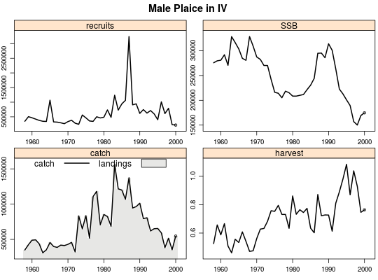
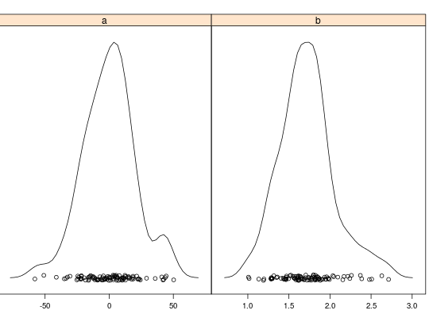

Method plot
Usage
# S4 method for FLQuant,missing plot(x, xlab = "year", ylab = paste("data (", units(x), ")", sep = ""), type = "p", ...) # S4 method for FLStock,missing plot(x, auto.key = TRUE, ...) # S4 method for FLBiol,missing plot(x, y, ...) # S4 method for FLIndex,missing plot(x, type = c("splom"), ...) # S4 method for FLSR,missing plot(x, main = "Functional form", log.resid = FALSE, cex = 0.8) # S4 method for FLPar,missing plot(x, y = "missing", ...)
Description
Standard plot methods for every FLCore class. FLR plot methods are based on
lattice, and attempt to show a general view of the
object contents.
Details
Users are encouraged to write their own plotting code and make use of the
overloaded lattice methods, for example
xyplot or bwplot. See also
lattice-FLCore.
Generic function
plot(x,y)
Examples

Warning message: coercing argument of type 'double' to logical
